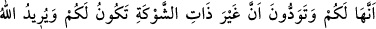

BEDİR GAZVESİNE ÇIKIŞ
5. (Onların bu hali,) müminlerden bir grup kesinlikle istemediği halde, Rabb’inin
seni evinden hak uğruna çıkardığı (zamanki halleri) gibidir.
6. Hak ortaya çıktıktan sonra sanki gözleri göre göre ölüme sürükleniyorlarmış
gibi (cihad hususunda) seninle tartışıyorlardı.
7. Hatırlayın ki, Allah size iki topluluktan (kervan veya Kureyş ordusundan)
birinin sizin olduğunu va’dediyordu; siz de kuvvetsiz olanın (kervanın) sizin
olmasını istiyordunuz. Oysa Allah, sözleriyle hakkı gerçekleştirmek ve (Kureyş
ordusunu yok ederek) kâfirlerin ardını kesmek istiyordu.
8. (Bunlar,) günahkarlar istemese de hakkı gerçekleştirmek ve bâtılı ortadan
kaldırmak içindi.
“(Onların bu hali,) müminlerden bir grup kesinlikle istemediği halde,” yani onlardan
bir grup ya savaştan nefret ettiklerinden veya savaşmaya kabiliyetleri olmadığı için
savaşa çıkmayı istemedikleri halde “Rabb’inin seni” Medîne’deki “evinden hak
uğruna” Allah’ın dînini üstün kılma ve düşmanlarını kahr u perişan etmek üzere
“çıkardığı” zamanki halleri “gibidir.” Allah Teâlâ’nın Peygamberimiz (s.a.v.)’i
çıkarmasından maksat, ona çıkmayı emreden ve çıkmaya davet eden o olduğu içindir.
Çünkü Cebrâil (a.s.), kendisine gelmiş ve çıkması gerektiğini bildirmiştir.
Bedir ganîmetlerinin savaşan gençlerle sancakların altında bekleyen yaşlılar
birbirinden ayrılmaksızın gaziler arasında eşit olarak taksim edilmesinden savaşanların
hoşlanmaması, senin çıkarılmandaki durum gibidir. Yani onların senin görüşünden
hoşlanmadıkları zamanki durumları gibidir. Çünkü hak olduğu halde bu taksim hakkında
savaşanların içinde olan hoşnutsuzluk, onların hak olduğu halde senin savaşa çıkmanı
hoş görmeme hallerine benzer.
Şeyhülislam Sa‘dî Çelebi şöyle der: Görünen o ki buradaki hoş görmemekten maksat,
insanın kudret ve irâdesi dışında olan tabîî isteksizliktir. Dolayısıyle bunu sahabilik